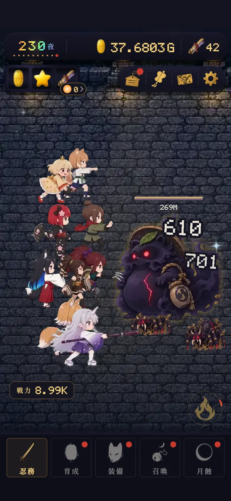
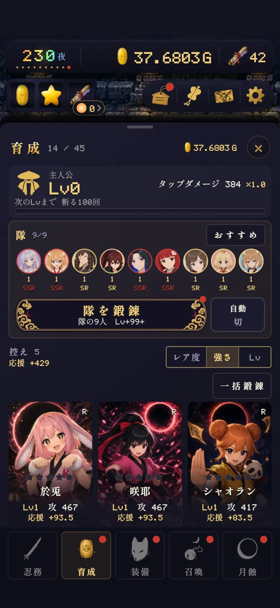

はじめかた 最初の一日
最終更新:
画面の見方

1234567- 1今の夜。下の点は、次の大妖までの残り
- 2小判（鍛錬に使う）と絵巻（召喚に使う）
- 3依頼・番付・文箱・設定
- 4妖。叩くと斬撃、なかまも自動で戦う
- 5戦力＝隊の強さ
- 6奥義。溜まると光るので押す
- 7下のタブ（忍務・育成・装備・召喚・月蝕）
夜と大妖
- 大妖は刻限30秒。倒せなくても失うものはなく、同じ夜の妖狩りに戻ります。鍛えてから挑み直せます。
- 章の鬼は小判×3。まだ越えていない章の鬼は、ひときわ手ごわくなります。
- 妖の属性は10夜ごとに 木→火→土→金→水 と巡ります。
大妖の型
大妖には6つの型があり、夜の番号で決まります（第20夜までは「常」）。
| 型 | 効き目 |
|---|---|
| 常 つね | 特になし |
| 堅甲 けんこう | タップダメージが半分。必殺技と奥義は二倍 |
| 韋駄天 いだてん | 体力が一・五倍。祓いの小判は三倍 |
| 月喰 つきばみ | 蝕の間は全ての力が二倍、蝕の外では七割 |
| 怨霊 おんりょう | 柱の力が半分。タップダメージは二倍 |
| 宝持ち たからもち | 品を二つ落とし、討てば宝鬼が湧く |
妖の体力と小判
式
第100夜まで: 雑魚の体力 = 10 × 1.1(夜−1)×0.5
第101〜2000夜: 10 × 1.149.5 + (夜−100)
第2001夜から: 第2000夜の体力 × 1.06(夜−2000)
大妖の体力 = 雑魚 × 24 × 壁（第10〜200夜で1→16倍）
小判 = 雑魚の体力 × 0.35（大妖は ×10）
実際の体力には「なかまの毎秒で決まる下限」があります。まだ倒していない大妖の下限は、初めて出会ったときの毎秒で決まり、そのあと鍛えても上がりません。負けたら鍛えて挑み直すのが正解です。
夜ごとの体力と小判（名目値・型や章の補正前）（ひらく）
| 夜 | 雑魚の体力 | 大妖の体力 | 雑魚の小判 | 大妖の小判 |
|---|---|---|---|---|
| 第1夜 | 10 | 240 | 3.5 | 35 |
| 第10夜 | 15.3 | 368 | 5.3 | 53.7 |
| 第50夜 | 103 | 10.3K | 36.1 | 361 |
| 第100夜 | 1.11K | 217K | 391 | 3.91K |
| 第200夜 | 15.4M | 5.92G | 5.39M | 53.9M |
| 第500夜 | 40.3E | 15.5Z | 14.1E | 141E |
| 第1000夜 | 20.0AC | 7.70AD | 7.02AC | 70.2AC |
| 第1500夜 | 9.97AJ | 3.82AK | 3.48AJ | 34.8AJ |
| 第2000夜 | 4.95AQ | 1.90AR | 1.73AQ | 17.3AQ |
| 第2500夜 | 22.2AU | 8.55AV | 7.79AU | 77.9AU |
| 第3000夜 | 100AY | 38.4AZ | 35.0AY | 350AY |
タップ
叩いた一撃は、「隊でいちばん低いなかまのLvから出す威力」と「隊の毎秒の3%」の大きい方に、装備と主人公レベルの倍率を掛けたもの。なかまが強くなれば、タップも一緒に強くなります。
一撃基本隊の強さから連撃×1.25叩き続けると溜まる会心×1.63%の確率見切り×1.2予兆から0.45秒・会心つき蝕×330秒のあいだ主人公Lv〜×3.33叩いた回数で
- 連撃は手を止めても3秒は減りません。
- 見切りが効くのは、予兆の窓の中の最初の1打だけ。
- 蝕は最初が約90秒後、そのあと約330秒ごと（暁と装備で短くなる）。月の欠片はふだん14秒漂い、最初の1回は触れるまで消えません。蝕の間は小判も×3から、大妖を討つと延び、続けて討つほど小判が増えます。
- 主人公レベルは月蝕でも消えません。
育成

123456- 1主人公レベル（叩いた回数で上がる）
- 2隊（9人）。顔を押すと入れ替え
- 3隊をまとめて一段鍛錬
- 4おまかせ鍛錬の入り切り
- 5控えと、隊への応援
- 6控えの一括鍛錬（隊に追いつく・MAX）
値段は1段ごとに×1.0545、威力は×1.035。値段の方が速く伸びるぶん、節目（Lv 10・25・50・100・200・400・800・1600・3200）で威力が×1.62跳ねます。節目に届く一段は値打ちが大きいので、あと少しで節目なら、そこまで上げる。
式
鍛錬の値段 = 基本の値段 × 1.0545Lv
威力 = 隊の基礎 × 1.035(Lv−1) × 節目の倍率
放置（留守の実入り）
式
留守の小判 = 隊の毎秒 × 0.35 × 留守の秒（上限まで）× 留守の実入り倍率
留守の実入り倍率 = (1＋提灯の主効果) × (1＋開眼の留守%) × (1＋付加の留守%) × (1＋通い路の留守%)
隊の毎秒は気絶を数えません。上限ははじめ8時間、暁のたびに+2時間、最大24時間。
- 留守の間も、2時間ごとに品が1つ落ちます（最大3つ）。
- 提灯の枠の装備と、開眼の「留守の灯」で実入りが増えます。
最初の一日
- 1
栞の手ほどきに沿って叩く
最初はエマひとり。召喚で開始組のなかまが加わっていきます。
- 2
小判が貯まったら育成で鍛錬
節目のLvを意識すると伸びが速い。
- 3
第5夜で依頼が開く
日替わりの3題を済ませると絵巻2枚。
- 4
絵巻が貯まったら召喚
はじめの30日は毎日1回、十連が無料。
- 5
第100夜で月蝕
すぐ押さず、進みが鈍るまで潜ってから。
- 6
寝る前は放っておくだけ
留守の間も隊が戦って小判が貯まります。
依頼
日替わりの3題は下の候補から選ばれます。3題すべて済ませると絵巻2枚。
妖を200体討つ大妖を3体討つ蝕を2度つかむ蝕の間に大妖を討つ奥義を10度放つログインする召喚の儀を行う妖を100体討つ
週ごとの宵巡りは10題。1題ごとに絵巻2枚、全部済ませる（満願）とさらに10枚。
宵巡りの題と目標（ひらく）
| 宵巡り | 目標 |
|---|---|
| 妖を三百体 | 300 |
| 蝕を三度 | 3 |
| 宝鬼を二体 | 2 |
| 奥義を二十度 | 20 |
| 召喚を十連 | 10 |
| 三日ログイン | 3 |
| タップを二千回 | 2000 |
| 大妖を五体 | 5 |
| 見切りを二十度 | 20 |
| 技を五十度 | 50 |